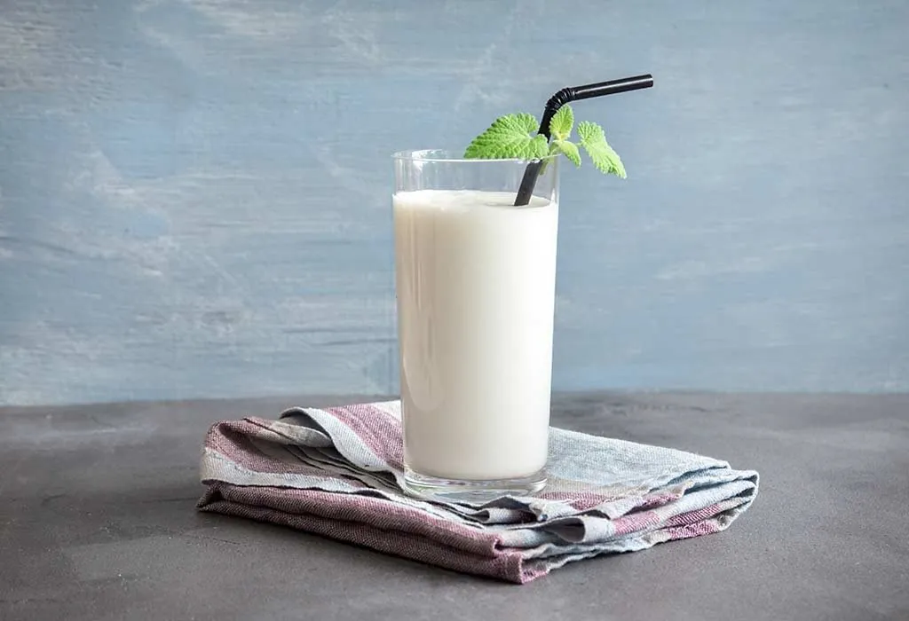

As the name suggests, this lassi variety is sweetened. Along with sugar, it incorporates yogurt (curd) and usually some fruit or flavorings such as saffron or cardamom. Sweet lassi is often enjoyed after a meal or simply as a refreshing drink that is especially popular during warm summer days.
Meal prep time : 10 minutes
Servings : 1-3